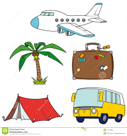
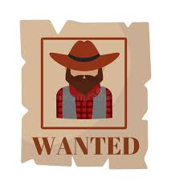

These are my latest projects

Rock-Paper-Scisors-Lizard-Spock
is an extension of the classic game of chance, Rock Paper Scissors, created by Sam Kass and Karen Bryla. Sam Kass explains he created the expanded game because it seemed like most games of Rock Paper Scissors with people you know would end in a tie.
Learn MoreATM
Simulate ATM program allows user to perform basic ATM functions such as: view balance, deposit/withdraw amount in your account.
Learn More

Day Trip Generator
Generates randomized trip itinerary and allows user to change any item of the trip.
Learn More

Most Wanted
Allows user search in database for a specific person by name or use multiple trait criteria to narrow down persons of interest.
Learn More